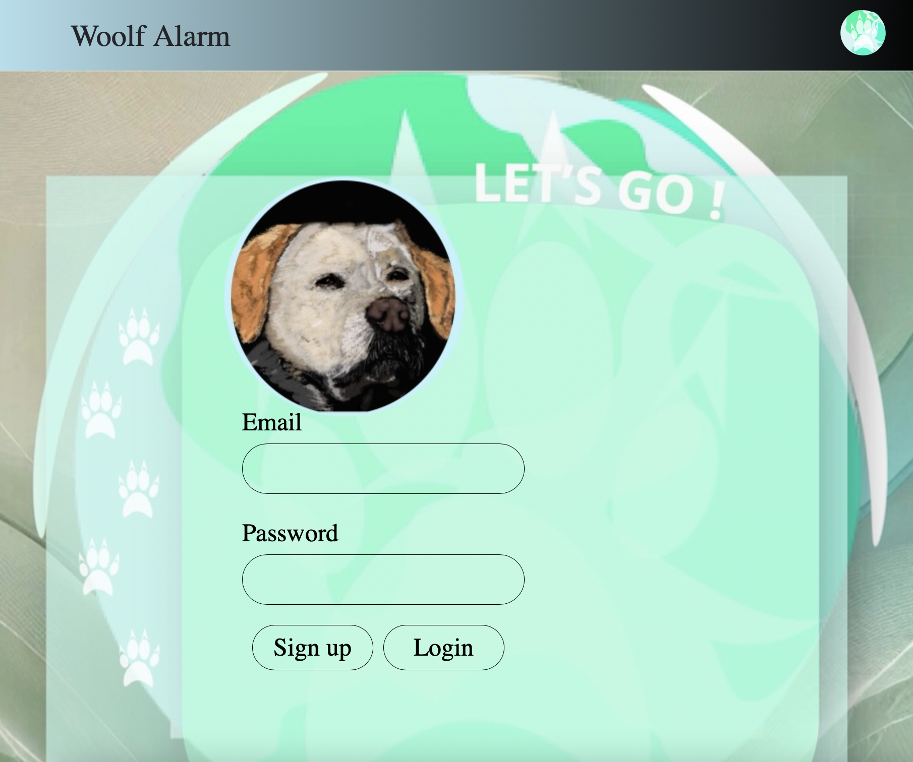

Woolf Alarm
Embark on stress-free walks with your loyal pooch using the innovative Woof Alarm app – the ultimate solution
for dog owners seeking to prevent unwanted encounters with other dogs.
Whether you're navigating the bustling streets or tranquil parks, Woof Alarm app is your go-to for ensuring a serene and secure walking experience.
First, create a username and password

Select your dog's breed from our comprehensive list of options and enjoy.
This custom sidebar allows you to personalize your profile by selecting a dog photo, adding your name, editing your bio, and more!
You have the option to enable your location at any time, which will display your position on the map and notify others within your proximity.